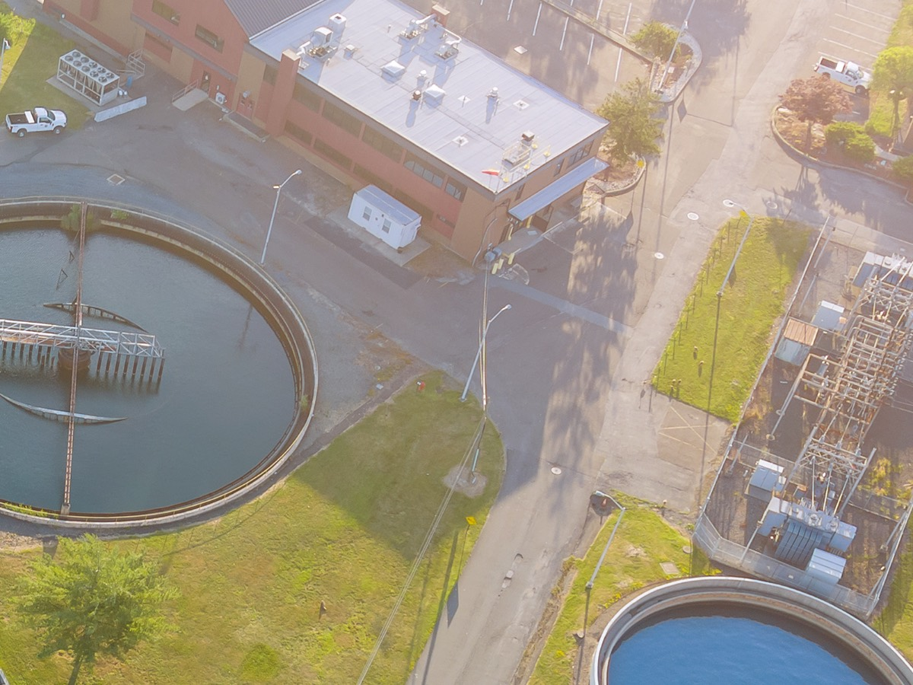

What we carry
Sorted by the system you run
Six categories covering the chemistry, the test kits and the feed equipment for boilers, cooling towers and closed loops — sold direct, with no service contract attached.

Boiler treatment
Steam and hot water, held in range
Oxygen scavengers, water dispersants, steam treatments and all-in-one programs for steam and hot-water boilers. Which one you need comes down to your feedwater alkalinity and how long the boiler runs — the first two questions the selector asks.

Cooling tower treatment
Scale and corrosion in open loops
Treatment for open recirculating towers, split by what comes out of your make-up line. Soft water and hard water need different chemistry, and running the wrong one shows up in the basin faster than you'd think.

Biocides
Two kill mechanisms, on rotation
Oxidizing biocides for a fast knockdown, non-oxidizing for the slower and more persistent kill — each in tablet or liquid. Most towers alternate between the two so the population never settles in around one of them.

Closed loop systems
Almost no loss, so almost no dosing
Chilled and hot water loops lose next to nothing to evaporation, so they need an inhibitor held in range rather than a full feed program. Nitrite does the work, and a periodic reading is all it takes to prove it's still there.

Test kits
The readings that prove it's working
Conductivity, pH, sulfite, total hardness, chlorine and PTSA fluorescein. Every product we sell lists the tests that go with it and the range you should be holding, so the kit and the chemistry arrive matched.

Feed equipment
What turns a program into a routine
Chemical feed pumps, injectors, foot valves and the fittings in between. If you're dosing by hand today, this is the shelf that takes the job off your calendar and puts it on a timer.
How it works
Four steps you can do yourself
Tell us what kind of system you're treating and we'll recommend the right product — plus the testing equipment you'll need to use it correctly. No catalog to dig through, no guesswork.
-

Tell us what you're treating
Pick your system — boiler, cooling tower or closed loop — and answer a few plain questions about it. Takes about a minute, and you don't need to know the chemistry to answer them.
-

Get your match
We come back with the right product for your water and the test kit that goes with it. One recommendation, one price, nothing to cross-reference in a catalog.
-

Dose it yourself
It ships to your door with dosing instructions written for whoever is actually holding the drum. No training course, no service visit to book, nobody to wait on.
-

Check it and know
Run the test, read the number, compare it to the range on the label. That's the whole job — and if the number looks off, we're one message away.
The catalog
Shop treatment products
Around 20 focused products — chemicals, dosing hardware, and the test equipment to run them. Pick a category or scroll through.
Learn as you go
Every product page comes with a how-to, not just a how-much.
Dosing instructions, testing steps, and short videos showing the process in action — so you know exactly what to do before the product even arrives.
Every product page lists a starting dose for your system volume. You test after 24 hours, then adjust up or down from there. The dosing chart does the math for you.
Most of these are drop-count kits: fill the tube, add drops, count the color change. Each product page walks through its tests step by step, with video.
Splash goggles and nitrile gloves cover most of what we sell. Anything that needs more than that is flagged on the product page before you add it to your cart.
Message us. A water treatment tech answers — no ticket queue, no upsell to a service contract.
Pull a sample, run the test, adjust the dose. That's the whole routine — about five minutes a week.
Still have questions? We're one message away.
Real techs, not a chatbot. Most replies land within one business day.